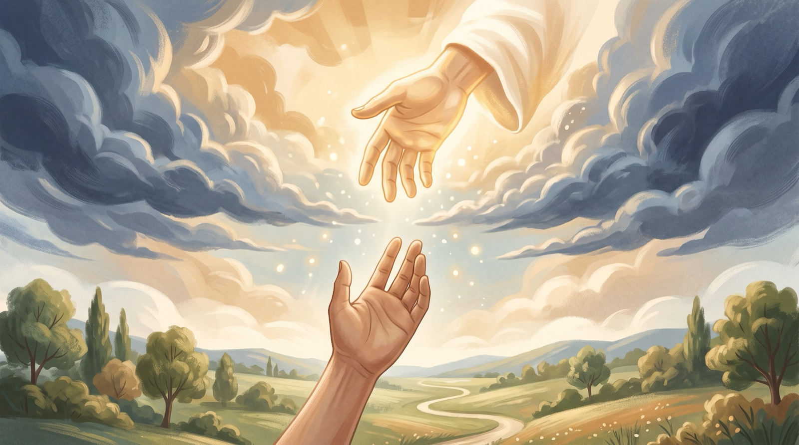
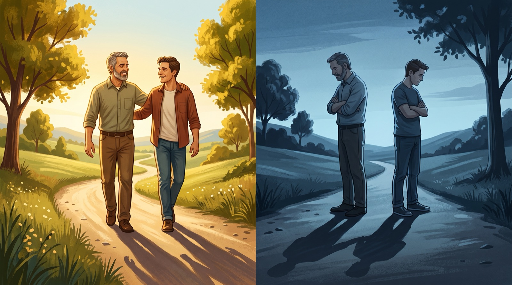
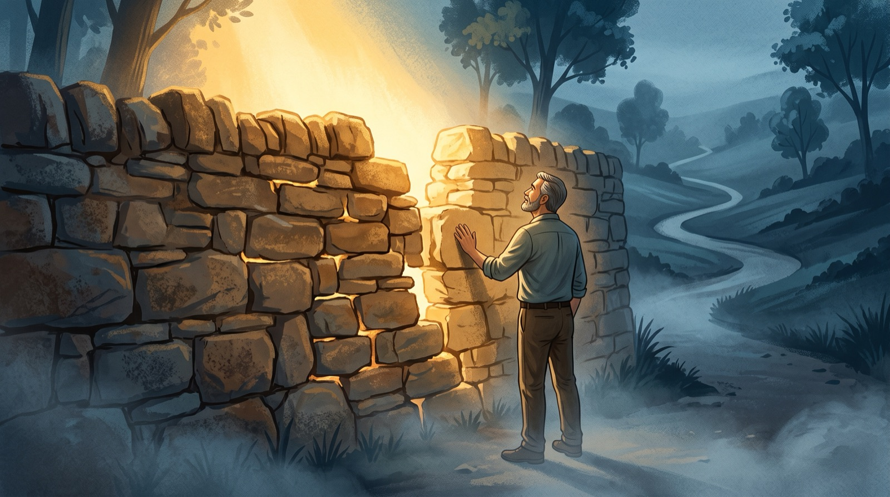
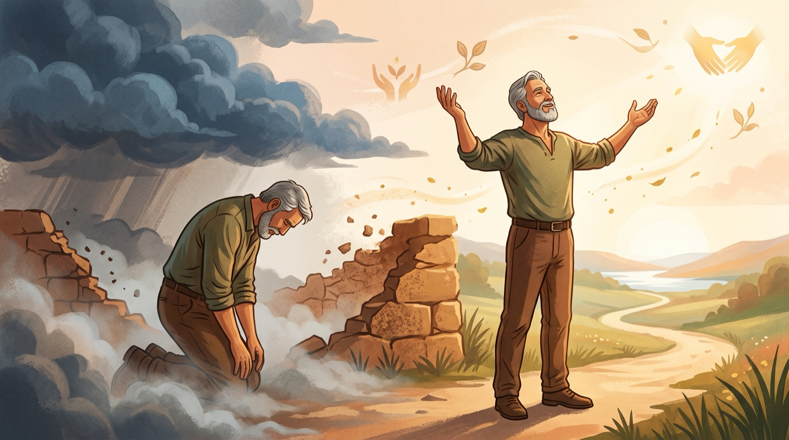

Урок 2. Сохранение связи с Богом
Мало удовольствий могут сравниться с удовольствием откинуть голову, чтобы устремить свой взор на свод Сикстинской Капеллы. Все, кому когда-либо довелось прогуляться под этой чудесной фреской, сразу отдают себе отчет в том, что это одна из самых ценных картин в мире. Немедленно внимание привлекается Божьей рукой, протянутой к человеку, кажется, они вот-вот коснутся друг-друга! Картина изображает надежду и напряженное ожидание. Человек может находиться рядом со своим Господом!

Иисус пошел на крест для того, чтобы Божья рука смогла коснуться руки человека. Он пожелал установить Личное Взаимоотношение между Богом и человеком, удаляя мешающую стену греха. Как только это препятствие было удалено, прощение объединило Бога и человека.
Бог желает иметь глубокое и постоянное взаимоотношение с человеком. Святой Апостол Иоанн, ученик и друг Иисуса, называет эту связь общением. Это слово нуждается в хорошем и правильном понимании. В самом деле, если мы знаем разницу между Общением и Взаимоотношением, мы обретаем способность удалить многие недоразумения в нашей христианской жизни.
Спрашивал ли ты себя когда-нибудь: «Теперь, когда Христос вошел в мою жизнь, что же происходит, когда я грешу?» Ответом будет: Грех прерывает твое общение с Богом, но не разрушает твоего Взаимоотношения с Ним.
Например: отец и сын

Эти картинки изображают две различные ситуации. Одна представляет любовь между отцом и сыном. Другая выражает отчужденность и холод. В обоих случаях, эти люди остаются в связи «отец-сын». Взаимоотношение не изменяется, но общение уже не то. Варианты, стоящие перед нами не есть «существование или отсутствие взаимоотношения», но «сближение - отдаление».
Представь себе, что у тебя проблема с отцом:
| Взаимоотношения | Общение |
|---|---|
| Иоанна 1:12. | Иоанна 15:15. |
| 1 Петра 1:3-4. | Псалом 32:3-5. |
| Иоанна 10:27–29. | 1 Иоанна 1:9. |
| Евреям 13:5. | Псалом 66:17-19. |
1 МЫ ДОЛЖНЫ СЕРЬЁЗНО ОТНОСИТЬСЯ К ГРЕХУ
Грех это препятствие во взаимоотношении с Богом, как неверующих, так и верующих. Грех пытается похитить прелесть жизни, которая состоит в Божьей любви и его прощении. Много людей не понимает, что такое грех, и как можно с ним бороться.

Грех означает больше, нежели врать, обманывать, прелюбодействовать и т.д. Библия учит, что даже возмущенное или безразличное отношение к Богу является грехом.
Каковы последствия греха?
Для неверующих грех является препятствием в личном взаимодействии с Богом.
Прочитай Римлянам 3:23
Для верующих, грех прерывает их общение с Богом.
Прочитай 1 Иоанна 1:6-8
2 ИСТОЧНИК ДУХОВНОГО ПРОЩЕНИЯ
Смерть Христа породила источник прощения и создала возможность личного взаимоотношения с Богом.
Прочитай 1 Петра 3:18.
Прочитай Колоссянам 2:13-14.
«И вас, которые были мертвы во грехах и в необрезании плоти вашей, оживил вместе с Ним, простив нам все грехи, истребив учением бывшее о нас рукописание, которое было против нас, и Он взял его от среды и пригвоздил ко кресту».
В те дни, когда были написаны эти строки, «рукописание» было списком, который был афиширован на двери камеры, в которой он сидел. Он содержал каждое преступление или злодеяние, за которое заключенный был осужден. Когда наказание было искуплено, или когда залог был заплачен, власти изымали этот список и указывали на нем: «заплачено». Заключенный имел право воспользоваться этим документом как доказательством своего искупления, и не мог быть вновь осужден за те же злодеяния.
- Обман
- Воровство
- Злоупотребление
- Ложь
- Жестокость
- Матерные слова
- Клевета
- прелюбодеяние
- распущенность
- ревность
- пьянство
- колдовство
- гордость
- наркомания
- Твоё рождение
- Ты принял Христа
В послании к Евреям говорится, что Иисус заплатил цену раз и навсегда. (Евр. 10:10-12).
3 ЛЮБОВЬ БОГА И ЕГО ПРОЩЕНИЕ В ТВОИХ РУКАХ
Хотя все твои грехи были прощены через смерть Христа, для того, чтобы сохранить постоянное общение с Богом, ты должен исповедовать эти грехи перед Ним.
Представь себя вновь вовлеченным в ситуацию взаимоотношения «отец-сын», о которой мы упоминали раньше.
Прочти 1 Иоанна 1:9
Исповедовать означает согласиться с Богом в отношении греха.
Когда Господь помогает тебе осознать, что какое-то твое отношение или поступок является грехом, исповедуй этот поступок или отношение перед Ним.
Эта исповедь предполагает не менее трех элементов:
Отказываясь от греха и приближаясь к Богу, ты сможешь вновь порадоваться Его любви и прощению. Вместо чувства вины ты почувствуешь вновь реальность общения с Богом.

Исповедь как практический опыт:
Исповедь и производимые результаты:
Прочитай Пс. 31:5, 102:12. Исаия 43:25.
4 ТВОЁ ОБЩЕНИЕ С БОГОМ НУЖДАЕТСЯ В ПИЩЕ (ПОДЗАРЯДКЕ)
Уже сегодня, прежде, чем лечь спать, удели время для того, чтобы применить практически те вещи, которые ты выучил в отношении любви и прощения Господа. Попробуй проводить ежедневно хотя бы 15 минут в общении с Богом, читая Библию и молясь. Вот несколько предложений для этого времени:
Понимая, каким образом Господь любит и прощает нас, ты сможешь жить в постоянном общении с Богом и особенно серьезно относиться к греху.
Material publicat de Here's Life Publishers, Inc. © 1984, Campus Crusade for Christ, Inc. Traducere în lb. Rusa, 1998 Toate drepturile rezervate.